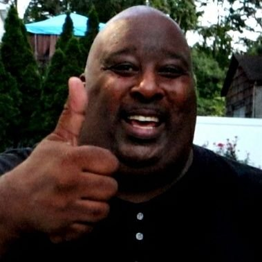
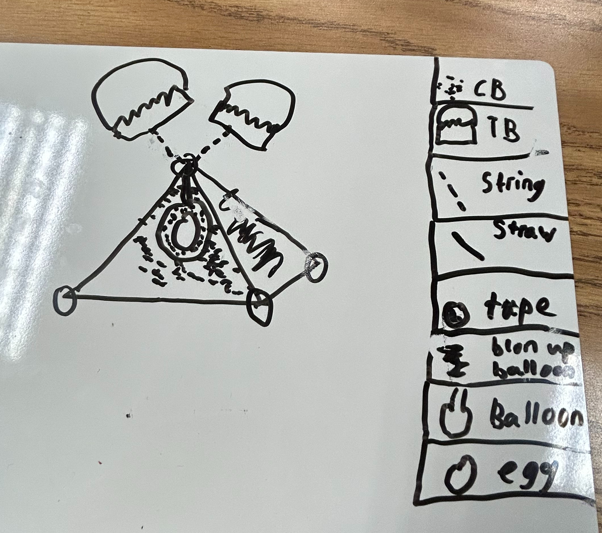
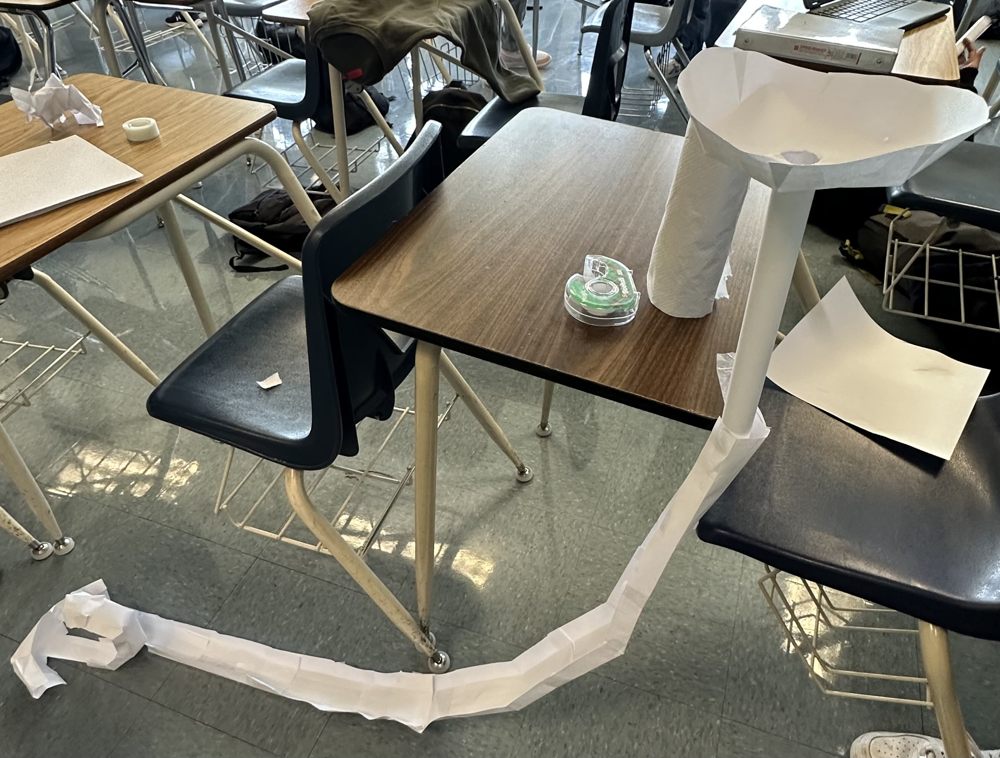
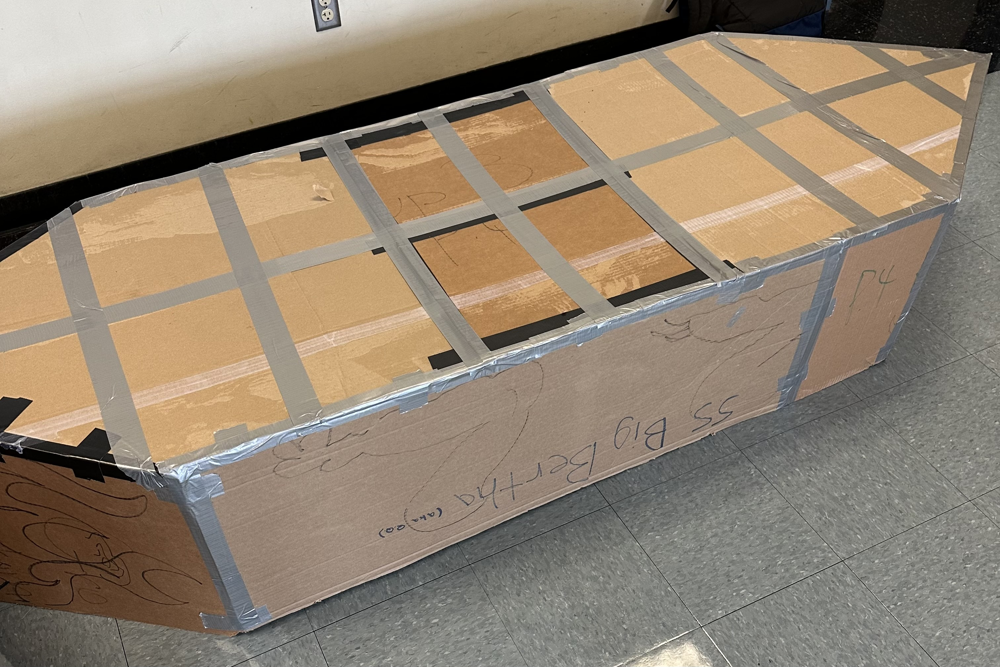

Hello World!
Welcome to my Website!
By Sebastian Kerk :)
Badlands Shrine lovely chugs by our lord .jpeg) ok say bye to badlands
ok say bye to badlands
ok say bye to badlands
ok say bye to badlands
9/2/2022 - This week we got started on Tinker Cad and mesed around with it for a class.we also learned abouut saftey and how to use machinces. Finally on Friday we had a challenge day and tried to replicate a home aplliance.
9/9/2022 - This week we started on our Rube Goldberg machine, we all made one and choose who's was the best, in the end Alex Lee won so we started working on a rough draft of his design.
9/16/2022 - This week we made tons of progress for our Rube Goldberg Machine, on Friday we also had a challenge day where we tried to make a boat out of paper to see if it could float in water
9/23/2022 - This week we finished our Rube Goldberg machines and got them tested our Rube Goldberg machine had a slope, a trap door, a pulley, and a see saw with a needle at the end that pops the baloon.Our project ended up being probably the most complex in the class which was cool. Overall I think that this was the best project so far.
9/30/2022 - For this week we got to disect a laptop and take out all the parts from it, along with this we also had to label and color a worksheet to show where all the parts would be on the laptop.
10/7/2022 - This week we got to cad a prosthetic for an animal, I chose a prosthetic beak for a bird, this ended up being really fun and is probably my favorite thing I caded. We also had a challenge day on Friday where we had to make a physical code for a penut butter and jelly sandwhich, some people failed, and others succeded but it was funny no matter what.
10/13/2022 - This week we drew our first desgin of our rocket and had a challenge day where we made flying paper and tried to hit a bucket. Overall this was a very fun week.
10/19/2022 - This week we finished building our bottle rocket and got to test it, most of the rockets including our own failed but it was really fun regardless.
10/21/22 - This week we finished our rocket, we went outside by the feild by our class. Our team's rocket went up then straight into the ground. It was pretty fun overall becasue we got to see how different rocket designes functioned. I think if our group made our rocket more for gliding, we would have done better.
10/27/22 - This week we learned about environmental engineering, on thursday we did a challenge where we make a water filter out of a 2 liter coke bottle, cotton balls, sand, pebbles and medium sized rocks. we stacked these on each other and put dirty water in the filter, after 3 minutes we had clearer water come out the bottom than the top. This was fun activity becasue we got to see which types of rock patterns filter the best When we went back inside we did a challeng were we had to figure out how many candy corns could fit on a peice of 8x11" paper. Our group siad 168 candy corns coud fit on the paper.
11/4/22 - This week we messed around with bread boards on tinker cad after learning about OHM's law. We learned how to use resistors to limmit the current the current coming fro our desired batteries. I quickly realized that tinker cad circutry can be used to safety and guarentee test real circuts that people are going to work on because it mimicks real life mechanics and laws of electricity
11/10/22 - This week we actuay worked on bread boards and we played around with similar consepts that we expeirmented on tinker cad, nothing very intresting, expect getting to use a real breadboard.

11/18/22 - This week we coded a blinking loop on the Arduino website, then we hooked it up to our physical Arduino. We then plugged in our Arduino with our code in our breadbords and hooked it up to the led. When we strarted the test, we were succesful, the led kept on bliking continuosly. On friday, we did a callenge where we had to find out if there were more wheels than doors on campus. Mr.Kim sent out half the class to count for doors and sent my half of the class to hunt for wheels. In the end of all the counting and debating, wheels won.

12/2/22 - This week we started to cad and glue our spagetti bridges, our group shose to do a long and skinny bridge that could possibly hold the weight of a bucket. We are going to test next week.
12/9/22 - This week we worked on and succesfully built our groups 1st spagetti bridge. We hope it dries well with the glue so that we can test it next week and start our second design.

12/15/22 - This Week we built our second and third bridge. Our second bridge had an x railroad pattern and held 1 1/2 cups. We are designing our third bridge with a grid pattern to see which one is stronger.

12/20/22 - This Week we built our final iteration, It held 3 cups. This was our best one becasue of the middle support we added for the final. we also made out bridge straighter than the third iteration. The problem with out first one was that it was too thin and did not have enough middle supports. The problem with the second iteration was thatwe made the sides on the railroad designs too thick and the glue made it weak. The third was fine we just wanted to improve it. Overall the bridge project was a cool way to see the weak points of a design and fix them. I think our last design was the best out of all of them becasue we held double the weight a last time. I think what helped was the middle support and the x design.
1/18/23 - This week we tried to come up with a solution to provide shade for a lake. My group ended up coming up with the idea of putting shade balls all over the lake as it is a fairly inexpensive option.
1/20/23 - This week we got to make ooblek, which is a mixture of startch and water which can also turn from a liquid to a solid and vice versa. It was a very fun experience that I will never forget
1/27/23 - This week we started the begining of our siz week long project where we got to choose from three options, a mouse trap car, a aurdiuno car, and a campus project. My group chose the mouse trap car.
2/3/23 - This week we got to play a game called Freeway on steam

2/10/23 - This week we reinforced our mouse trap car with hot glue, and on friday we had a challenge day where we tried to hold a ballon with only popsicle sticks and a yard stick
2/17/23 - This week we finished our first iteration and it didnt work so well, the axles were not stable and it barely moved.
2/24/23 - This week we started on our second iteration of our project, this time we tried to stablize the axles to hopefully fix the problem
3/3/23 - This week we finished our second iteration of our project, the modifications we did on our axles didnt seem to work, becuase the same problem occured when we tested it this time.
3/10/23 - This week we did a challenge where we had to make a functional boat that could float. Our group built a boat that looked good but we relized it was to tall and had a bad sail desing so it didn't go that far. It was a fun challenge and of course, it was intresting to see the variety of different boats and how they preformed.Then on Friday we had a guest speaker that talked about his career of petroleum engineering. It was pretty col to see him exlain the job, but im nt to intrested in that feild and it looked really confusing.

3/20/23 - This week we began an "Egg Drop" project. The goal of the project is to be able to drop an egg from a 3 story building and keep it intact. We completed the BOM and CAD for our project. We decided to use balloons below the egg to cushion the impact, and the trash bag as a parachute to provide air-resistance to slow the fall and reduce the force of impact.
3/24/23 - This week we started a project were we drop an egg and try not to crack it. So far all groups including mine have made a cad for our design. This is our cad, its not the best but it is what we have for now.
3/31/23 - This week we focused on building a exoskeleton for an egg that we would drop 3 stories. Our design was good becasuse it was very simple and easy but good becasue the egg survived. We put an egg in a baloon, then put newspaper in the baloon to create a cushion. Then we built a triangular cage out of straws, we then put the egg inside and attached the trash bag. Our design can be seen below.

4/3/23 - This week we began designing a cardboard boat. It was required that the boat could hold two people and float across the school pool. We created sketch and a CAD. We went with a pentagonal shape for the boat elongated to hold two people, and with a pointed tip to decrease water resistance.
4/7/23 - This week we were introduced to our final project, building a lifesized cardboard an tape boat. Two people from our group must take this boat across the school pool. We made a paper scketch and a cad that can be seen below. We decided we wanted a big base so that the boat can distribute the weight of people evenly. Then on friday we did a challenge when we had to make the longest functional bridge out of sticky notes. our design in the middle of its making can be seen below aswell.

4/14/23 - This week we drew cutouts for our caded boats and cut the bottoms out. That was pretty much all we did becasue it was a long process.
4/21/23 - This week my partner Alex and I built a prototype boat out of cardboard and ducktape. We just changed the feet to inches and made a mini model. On thursday, we tested the mini prototype in the school pool with weights. Then on Friday, we just had a free day. the prototype and test can be seen below.
4/28/23 - This week we worked on getting the base shape of our boat, next week we will reinforce it becasue we will gt our official tape roles.
5/5/23 - This week we finished our boat and added reinforcements to the bottom. That is pretty much all.
5/12/23 - This week we had finished our boat so we just added accessories to make it look nicer. Then, on fridy we built a paper roller coaster. Ours had a loop that worked succesfully and it had a funnel at the top. I am pretty proud that our loop worked :) pic of roller coaster can be seen below.
5/19/23 - This week we continued building our boat, we finally finished after rebuilding it after an unfortunate accident. The pcture of our rebuilt and reinforced boat can be seen below.
5/26/23 - This week we worked on a project report of our boat experience and our backrounds prior to our project.
6/2/23 - This week we tested our final boats with all the other classes. This was not really succesful other than us lerning what we could have done better. Many groups failed and for many reasons. Overall I really enjoyed this final project. A picture of the whole event can be seen below. 6/2/23 - This week we tested our final boats with all the other classes. This was not really succesful other than us lerning what we could have done better. Many groups failed and for many reasons. Overall I really enjoyed this final project. A picture of the whole event can be seen below.